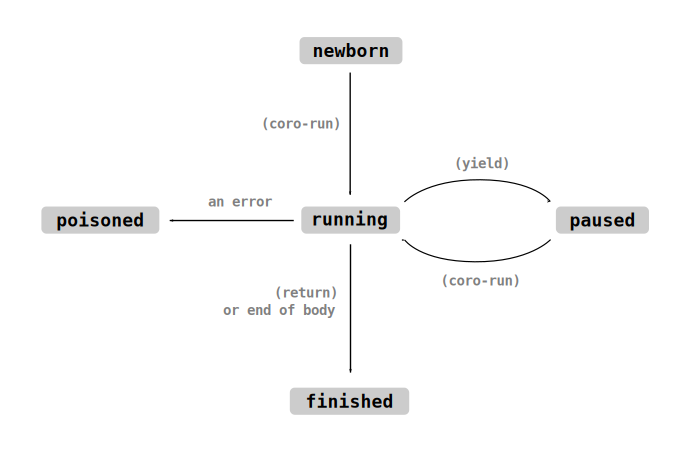

Coroutines
A coroutine is a function which can be paused, and later on resumed from where it left off.
Coroutines are defined using the yield special form. When yield is encountered
within a function, that function pauses its execution, and control flow returns to the caller.
Later, coro-run can be used to resume the coroutine, which causes execution
to restart from the yield form.
(defn example ()
(pr "first ")
(yield)
(prn "third"))
; invoking a function which contains a (yield) does not start its execution.
; instead, it returns a coroutine which is paused at the start of the
; function's body.
(let coroutine (example))
(coro-run coroutine) ; executes up until the yield
(pr "second ")
(coro-run coroutine) ; executes from the yield to the end of the function
; the above code prints: first second third
Coroutines can pass values back and forth to their caller when they are paused and resumed.
(yield x) causes the value x to be returned from the (coro-run ...) call.
(coro-run coroutine y) causes the value y to be returned from the (yield) call. In both
cases, when no value is specified it defaults to #n.
; this coroutine returns values to its caller. note that coroutines can
; receive arguments, just like a normal function call
(defn increment-forever (n)
(loop
(yield n)
(inc! n)))
(let co (increment-forever 100))
(prn (coro-run co)) ; prints 100
(prn (coro-run co)) ; prints 101
(prn (coro-run co)) ; prints 102
; this coroutine receives values from its caller
(defn overly-elaborate-prn ()
(loop
(prn (yield))))
(let co (overly-elaborate-prn))
(coro-run co) ; run until the first (yield)...
(coro-run co 'alpha) ; the coroutine prints alpha
(coro-run co 'beta) ; the coroutine prints beta
(coro-run co 'gamma) ; the coroutine prints gamma
fn-yields? will tell you whether or not a function will create a
coroutine when called.
Life-Cycle of a Coroutine
The coro-state function returns a symbol describing the current state of a
coroutine: newborn, running, paused, finished or poisoned.

When you call a function which has at least one yield form somewhere in its body, it will return
a newborn coroutine. You can execute it with coro-run; a currently-executing coroutine is
in the running state. When it encounters a yield form, it will become paused, meaning it
can be resumed again with coro-run. When a running coroutine returns, it will transition to
the finished state, which is the end of its life-cycle.
If an error bubbles through a coroutine while it's executing, we assume that it's
been left in a disorderly state. Its state is set to poisoned, and any attempt to resume it
will trigger an error. This is analogous to how Rust's Mutex type works.
Coroutines and Iteration
Coroutines are iterable. A coroutine iterator will repeatedly call (coro-run the-coro) and
produce each value which the coroutine yields.
This can be used to implement custom iterators:
; a coroutine-based implementation of the `lines` function. copies
; a string and then splits it into individual lines, yielding one
; line at a time. once there are no lines left, it returns.
(defn lines (source-str)
(let st (clone source-str))
(while (> (len st) 0)
(let pos (position st \newline))
(cond
((nil? pos)
(yield st)
(break))
(else
(let line (remove! st : pos))
(pop-start! st)
(yield line)))))
(prn (arr ..(lines "aaa\nbbb\nccc"))) ; prints ("aaa" "bbb" "ccc")
Stackful and Stackless Coroutines
In languages like Lua and Ruby, coroutines are "stackful". Each coroutine allocates its own call-stack, and it can yield from arbitrarily deep within that call-stack.
On the other hand, GameLisp's coroutines follow the model set by Rust, Python, C# and C++. Our
coroutines are "stackless": they only store enough data to pause a single call-frame, so it's
not possible for a coroutine to call a non-coroutine function and yield from inside it. You
can only yield from the body of the coroutine function itself.
The primary reason for this is that it's much more efficient. Each and every Ruby coroutine
(known as a Fiber) allocates a four-kilobyte, fixed-size callstack. In contrast, a typical
GameLisp coroutine will only allocate 100 to 300 bytes of data - about one-twentieth of the memory
burden!
The other reason to prefer stackless coroutines is that they can be nested almost as
straightforwardly as stackful coroutines. The yield-from macro will loop
through an iterable, repeatedly yielding each of its results until it's finished. When the
iterable is a coroutine, this is roughly equivalent to calling a function and yielding from
inside it.
; a coroutine which keeps yielding until some event is triggered,
; and then returns
(defn wait-until-trigger (trigger-name)
(until (trigger-set? trigger-name)
(yield)))
; a coroutine which controls the behaviour of an entity. the coroutine is
; resumed once per frame. it will do nothing until the 'can-move event
; has been triggered, and then it will horizontally slide towards the
; target x coordinate, bit by bit, until it has been reached.
(defn move-to (self x-target)
(yield-from (wait-until-trigger 'can-move))
(until (= [self 'x] x-target)
(seek! [self 'x] x-target 1.5)
(yield)))
Why Coroutines?
Coroutines can be thought of as a form of cooperative multitasking. They behave like
operating-system threads, but rather than being interrupted at unpredictable intervals by the
scheduler, they're allowed to execute for as long as they please. The coroutine itself decides
when to manually end its time-slice and yield control back to the "scheduler" (in this case,
the function which invoked coro-run).
This type of control flow is a natural fit for game programming. Game worlds tend to be filled with entities which perform complicated behaviours, splitting their actions into tiny incremental "steps". When the entity isn't doing anything too elaborate, it's easy to model their behaviour as a simple function which is called once per frame - but when you want to do a few different things in sequence, "action A followed by action B followed by action C", then coroutines are usually a much better choice.
Consider a cutscene script controller. We want this cutscene to show a dialogue bubble until the player dismisses it, then have the main character walk to the right until they reach a waypoint, then pause dramatically for three seconds, then show another dialogue bubble. Cramming all of this state into a single event-handler function is a real challenge:
(defn step-handler (self)
(match [self 'current-state]
('start
(= [self 'bubble] (speak self "You don't understand! I just have..."))
(= [self 'current-state] 'bubble-0))
('bubble-0
(when (bubble-finished? [self 'bubble])
(= [self 'current-state] 'walking-to-waypoint)))
('walking-to-waypoint
(step-towards-point self (waypoint 'dramatic-pause))
(when (at-waypoint? self (waypoint 'dramatic-pause))
(start-sound 'howling-wind)
(= [self 'pause-timer] 3.0)
(= [self 'current-state] 'pausing)))
('pausing
(dec! [self 'pause-timer] :dt)
(when (<= [self 'pause-timer] 0.0)
(= [self 'bubble] (speak self "...too many Incredibly Deep Feelings."))
(= [self 'current-state] 'bubble-1)))
('bubble-1
(when (bubble-finished? [self 'bubble])
; leave the viewer to process the scene's breathtaking emotional pathos
(= [self 'current-state] 'finished)))))
The equivalent coroutine is a beauty:
(defn run-cutscene (self)
(yield-from (speak self "You don't understand! I just have..."))
(yield-from (walk-to-point self (waypoint 'dramatic-pause)))
(start-sound 'howling-wind)
(yield-from (wait-secs 3.0))
(yield-from (speak self "...too many Incredibly Deep Feelings.")))
All of that state which we had to manually store elsewhere is now implicit in the coroutine.
The child functions would be simpler, too: the coroutine walk-to-point is likely to be much
easier to implement, compared to the function step-towards-point. Our coroutine even has
slightly better performance! Previously we were calling (waypoint) every frame because it would
have been too much effort to cache it, but the coroutine makes it obvious that rechecking the
waypoint every frame is actually the more-expensive option.
Cutscene scripting is usually such a nightmare that many smaller game projects either give up hope of doing anything interesting with it, or come up with some hacky, limited, data-driven cutscene control library. But with the incredible power of coroutines, it's all just code, and you can make your cutscenes as complicated and emotional as you like! Try not to make your players cry too much.
Coroutines are particularly powerful when combined with explicit state machines. We'll explore the possibilities in more depth when we discuss object-oriented programming.